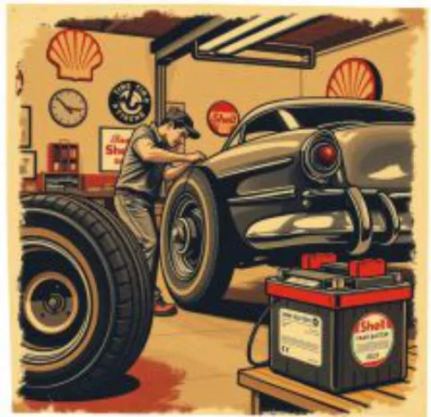
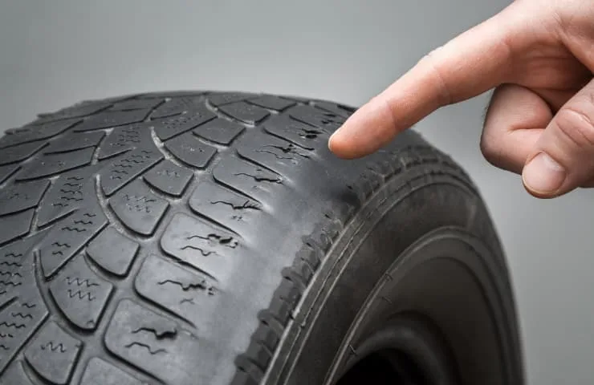
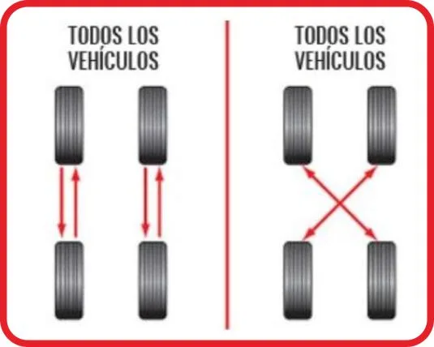
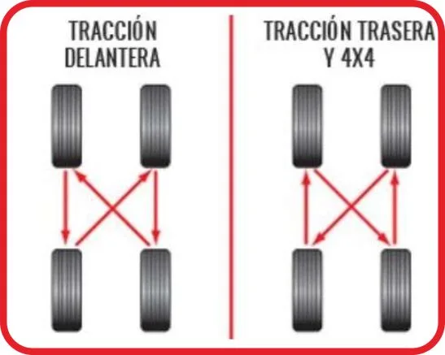

Rotación de Cauchos: La Clave para un Desgaste Uniforme y Mayor Durabilidad
Publicado el

La rotación de cauchos es un aspecto fundamental del mantenimiento de cualquier vehículo. Aunque muchas personas lo pasan por alto, esta práctica ayuda a extender la vida útil de los cauchos, mejorar la seguridad y optimizar el rendimiento del vehículo.
¿Por qué es importante la Rotación de Cauchos?
Los cauchos no se desgastan de manera uniforme. Diversos factores como el peso del vehículo, la posición de las ruedas y las condiciones de manejo pueden hacer que algunos neumáticos se deterioren más rápido que otros. Una rotación periódica ayuda a equilibrar este desgaste, permitiendo:
- Mayor durabilidad de los cauchos.
- Mejor tracción en la carretera.
- Ahorro de dinero, al retrasar la compra de nuevos cauchos.
- Mayor seguridad, evitando desgaste excesivo en ciertas zonas de los cauchos.

¿Cada cuánto tiempo se deben Rotar los Cauchos?
Los expertos recomiendan realizar la rotación de cauchos cada 8,000 a 10,000 kilómetros, o aproximadamente cada 6 meses, dependiendo del uso y tipo de vehículo. Sin embargo, si notas un desgaste irregular, es mejor hacerlo antes.
Tipos de rotación según el vehículo
Cada tipo de vehículo requiere un patrón distinto de rotación:
- Autos de tracción delantera: Se intercambian los Cauchos delanteros con los traseros en forma cruzada.
- Autos de tracción trasera: Se mueven los Cauchos traseros hacia adelante y los delanteros se cruzan al ir hacia atrás.
- Vehículos con tracción en las cuatro ruedas: Se recomienda hacer la rotación en forma de “X” para equilibrar el desgaste.


CORCAUCHOS Expertos en Venta y Mantenimiento de Cauchos en Barquisimeto
En CORCAUCHOS, nos especializamos en ofrecer cauchos de alta calidad para todo tipo de vehículos. Además, contamos con un servicio profesional de Rotación de tus cauchos, asegurando que tu automóvil funcione de manera segura y eficiente.
¿Quieres conocer más sobre cómo mantener tus cauchos en óptimas condiciones? Visítanos en Barquisimeto y deja que nuestros expertos te asesoren.

¿Necesitas este servicio en Barquisimeto? Escríbenos y te atendemos.
Escríbenos por WhatsApp